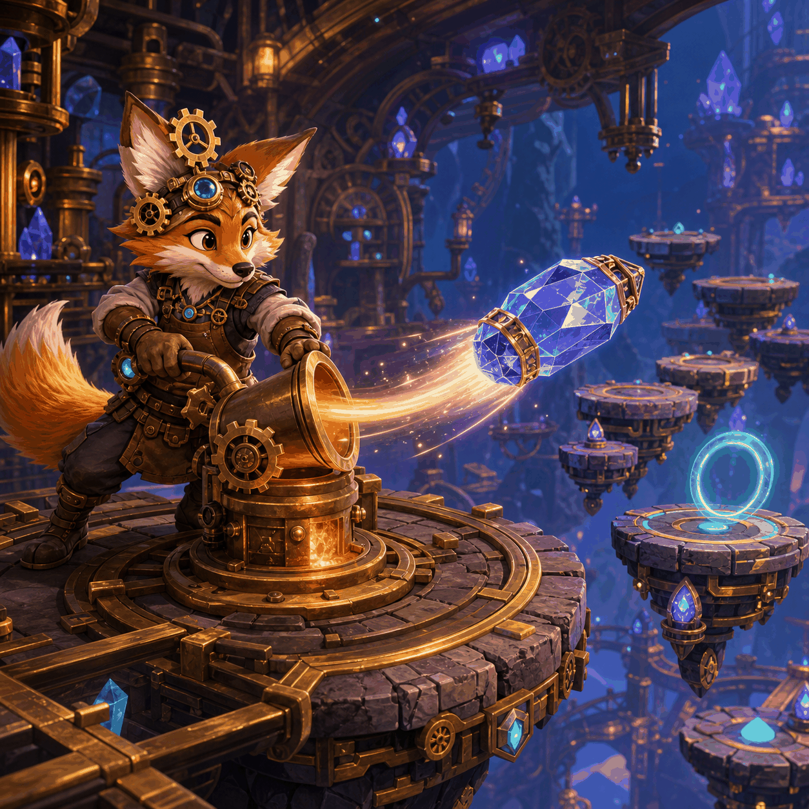

Flip Foundry

Launch a crystal canister with one swipe, then tune your force to land across 24 workshop platforms in six short chapters.
Best streak: 0
Foundry Chapters
Swipe upward from the canister.
Swipe up. Shorter swipes stay low; longer swipes climb farther.